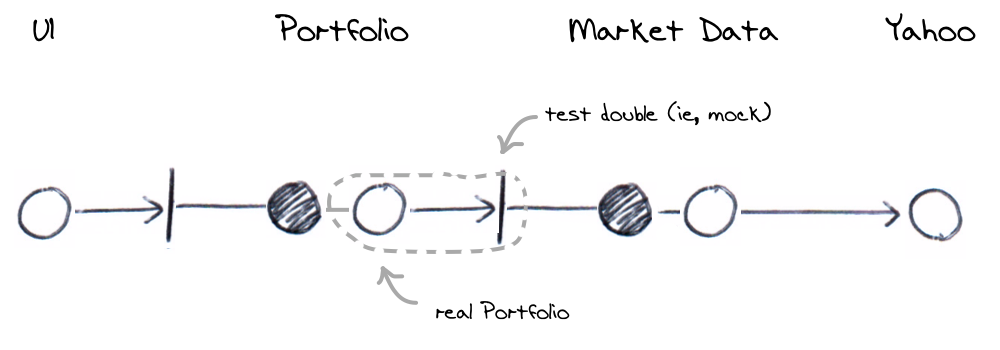

This test simulates the Portfolio requesting a stock price from Market Data. It's
exercising that the Market Data port is called correctly (it confirms the Portfolio
Java API message is translated into the Market Data Java API message.

A request for a valuation is received for a book containing AMZN and GOOG stocks
Market data is queried for AMZN and GOOG